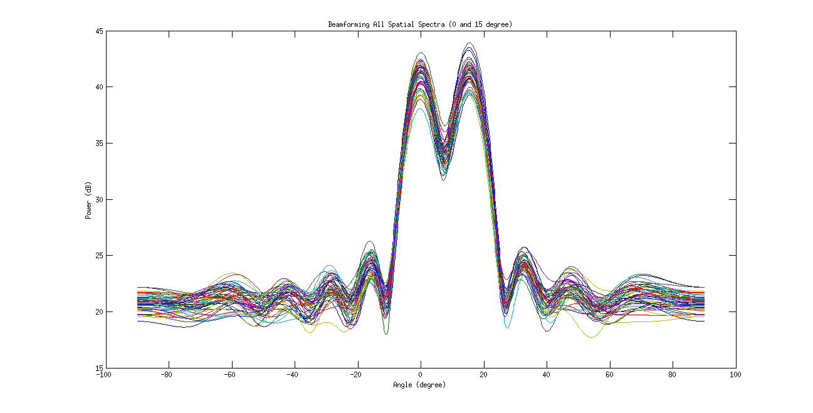

EE779:Assignment 4
Contents
- Kalpesh Patil (130040019)
- Q1: Spatial Spectral Estimators
- Q1 (a) Theta = [0 and 15]
- Beamforming Method
- Capon Method
- Root-Music Method
- ESPRIT Method
- Q1 (b) Theta = [0 and 7.5]
- Beamforming Method
- Capon Method
- Root-Music Method
- ESPRIT Method
- Q1 Observations
- Q1(a) theta = 0 and 15 degrees
- Q1(b) theta = 0 and 7.5 degrees
- Q2 : DOA estimation for real dataset
- Beamforming Method Estimate
- Capon Method Estimate
- Root-Music Method Estimate
- ESPRIT Method Estimate
- Q2: Results summarised
Kalpesh Patil (130040019)
close all clear all
Q1: Spatial Spectral Estimators
For a given iteration, ULA dataset is calculated (by taking randomization of noise into consideration). The corresponding spectra from different methods like Beamforming, Capon's method is computed. The diretion of arrival is estimated using Root Music as well as ESPRIT method also. This procedure is repeated for 50 iterations.
function [beamforming,capon,root_music,ESPRIT,n_sample] = q1(theta)
P_mat = [1,0;
0,1];
n_sample=1028;
y = zeros(10, 100, 50);
beamforming = zeros(50, n_sample);
capon = zeros(50, n_sample);
root_music = zeros(50, 2);
ESPRIT = zeros(50, 2);
for i=1:50
y(:,:,i) = uladata([0, theta] ,P_mat,100,1,10,0.5);
beamforming(i,:) = beamform(y(:,:,i), n_sample, 0.5);
capon(i,:) = capon_sp(y(:,:,i), n_sample, 0.5);
root_music(i,:) = root_music_doa(y(:,:,i), 2, 0.5);
ESPRIT(i,:) = esprit_doa(y(:,:,i), 2, 0.5);
end
endQ1 (a) Theta = [0 and 15]
[beamforming_15,capon_15,root_music_15,ESPRIT_15,n_sample]=q1(15);
Beamforming Method
Average of 50 iterations for beamforming is plotted.
fig = figure; tempx = linspace(-90,90,n_sample); tempy = mean(beamforming_15(:,1:n_sample)); plot(tempx,20*log10(tempy)) ylabel('Power (dB)') title('Beamforming Avg Spatial Spectrum (0 and 15 degree)'); xlabel('Angle (degree)') set(gcf, 'Position', get(0, 'Screensize')); saveas(fig,'../results/Q1/beamforming_15_Avg.jpg','jpg');
Output of all 50 iterations for beamforming is plotted.
fig = figure; tempx = linspace(-90,90,n_sample); tempy = (beamforming_15)'; plot(tempx,20*log10(tempy)) ylabel('Power (dB)') title('Beamforming All Spatial Spectra (0 and 15 degree)'); xlabel('Angle (degree)') set(gcf, 'Position', get(0, 'Screensize')); saveas(fig,'../results/Q1/beamforming_15_All.jpg','jpg');
Capon Method
Average of 50 iterations for Capon is plotted.
fig = figure; tempx = linspace(-90,90,n_sample); tempy = mean(capon_15(:,1:n_sample)); plot(tempx,20*log10(tempy)) ylabel('Power (dB)') title('Capon Avg Spatial Spectrum (0 and 15 degree)'); xlabel('Angle (degree)') set(gcf, 'Position', get(0, 'Screensize')); saveas(fig,'../results/Q1/capon_15_Avg.jpg','jpg');
Output of all 50 iterations for beamforming is plotted.
fig = figure; tempx = linspace(-90,90,n_sample); tempy = (capon_15)'; plot(tempx,20*log10(tempy)) ylabel('Power (dB)') title('Capon All Spatial Spectra (0 and 15 degree)'); xlabel('Angle (degree)') set(gcf, 'Position', get(0, 'Screensize')); saveas(fig,'../results/Q1/capon_15_All.jpg','jpg');

Root-Music Method
Vertical lines of the same height indicating direction of arrival in each of the 50 iterations are plotted for Root Music Method. The variance of the estimate can be observed by the spread of the data
fig = figure; stem(root_music_15(:), ones(100,1)); title('Root Music (0 and 15 degree)') xlabel('Angle (degree)') set(gcf, 'Position', get(0, 'Screensize')); saveas(fig,'../results/Q1/root_music_15.jpg','jpg');
ESPRIT Method
Vertical lines of the same height indicating direction of arrival in each of the 50 iterations are plotted for ESPRIT Method. The variance of the estimate can be observed by the spread of the data
fig = figure; stem(ESPRIT_15(:), ones(100,1)); title('ESPRIT method (0 and 15 degree)') xlabel('Angle (degree)') set(gcf, 'Position', get(0, 'Screensize')); saveas(fig,'../results/Q1/ESPRIT_15.jpg','jpg');
Q1 (b) Theta = [0 and 7.5]
[beamforming_7_5,capon_7_5,root_music_7_5,ESPRIT_7_5,n_sample]=q1(7.5);
Beamforming Method
Average of 50 iterations for beamforming is plotted.
fig = figure; tempx = linspace(-90,90,n_sample); tempy = mean(beamforming_7_5(:,1:n_sample)); plot(tempx,20*log10(tempy)) ylabel('Power (dB)') title('Beamforming Avg Spatial Spectrum (0 and 7.5 degree)'); xlabel('Angle (degree)') set(gcf, 'Position', get(0, 'Screensize')); saveas(fig,'../results/Q1/beamforming_7_5_Avg.jpg','jpg');
Output of all 50 iterations for beamforming is plotted.
fig = figure; tempx = linspace(-90,90,n_sample); tempy = (beamforming_7_5)'; plot(tempx,20*log10(tempy)) ylabel('Power (dB)') title('Beamforming All Spatial Spectra (0 and 7.5 degree)'); xlabel('Angle (degree)') set(gcf, 'Position', get(0, 'Screensize')); saveas(fig,'../results/Q1/beamforming_7_5_All.jpg','jpg');
Capon Method
Average of 50 iterations for Capon is plotted.
fig = figure; tempx = linspace(-90,90,n_sample); tempy = mean(capon_7_5(:,1:n_sample)); plot(tempx,20*log10(tempy)) ylabel('Power (dB)') title('Capon Avg Spatial Spectrum (0 and 7.5 degree)'); xlabel('Angle (degree)') set(gcf, 'Position', get(0, 'Screensize')); saveas(fig,'../results/Q1/capon_7_5_Avg.jpg','jpg');
Output of all 50 iterations for beamforming is plotted.
fig = figure; tempx = linspace(-90,90,n_sample); tempy = (capon_7_5)'; plot(tempx,20*log10(tempy)) ylabel('Power (dB)') title('Capon All Spatial Spectra (0 and 7.5 degree)'); xlabel('Angle (degree)') set(gcf, 'Position', get(0, 'Screensize')); saveas(fig,'../results/Q1/capon_7_5_All.jpg','jpg');
Root-Music Method
Vertical lines of the same height indicating direction of arrival in each of the 50 iterations are plotted for Root Music Method. The variance of the estimate can be observed by the spread of the data
fig = figure; stem(root_music_7_5(:), ones(100,1)); title('Root Music (0 and 7.5 degree)') xlabel('Angle (degree)') set(gcf, 'Position', get(0, 'Screensize')); saveas(fig,'../results/Q1/root_music_7_5.jpg','jpg');
ESPRIT Method
Vertical lines of the same height indicating direction of arrival in each of the 50 iterations are plotted for ESPRIT Method. The variance of the estimate can be observed by the spread of the data
fig = figure; stem(ESPRIT_7_5(:), ones(100,1)); title('ESPRIT method (0 and 7.5 degree)') xlabel('Angle (degree)') set(gcf, 'Position', get(0, 'Screensize')); saveas(fig,'../results/Q1/ESPRIT_7_5.jpg','jpg');
Q1 Observations
Q1(a) theta = 0 and 15 degrees
- All the methdos are able to resolve two angles (0 and 15) clearly.
- Compared to beamforming method, peaks in the Capon's method are much sharper which allows better estimation. Also we can observe that energy in the sidelobes is very less in Capon's method.
- Vertical lines for Root Music are closely packed as opposed to ESPRIT method. This implies lesser variance in case of Root Music compared to ESPRIT method.
- Capon method is performing better than beamforming while Root Music is performing better than ESPRIT. This is expected as they are analogous to the time series case.
Q1(b) theta = 0 and 7.5 degrees
- Beamforming has failed miserably to resolve the peaks. It creates single peak somewhere in between rather than two different peaks.
- Capon's method has created two different very small peaks. The resolution is not at all good, but better than beamforming which formed a single peak.
- Vertical lines for Root Music are closely packed as opposed to ESPRIT method. This implies lesser variance in case of Root Music compared to ESPRIT method. But the spread this time ( 0 and 7.5 degree) spread of lines is more than in the case of 0 and 15 degrees. This suggests that variance of the estimate is more for 0 and 7.5 degree than 0 and 15 degree.
- Capon method is performing better than beamforming while Root Music is performing better than ESPRIT. This is expected as they are analogous to the time series case.
Q2 : DOA estimation for real dataset
function [beamforming,capon,root_music,ESPRIT,n_sample] = q2()
% load input data
load('../data/submarine.mat');
n_sample = 1028;
dl = d/lambda;
beamforming = beamform(X, n_sample, dl);
capon = capon_sp(X, n_sample, dl);
root_music = root_music_doa(X, 2, dl);
ESPRIT = esprit_doa(X, 2, dl);
end[beamforming,capon,root_music,ESPRIT,n_sample] = q2();
Beamforming Method Estimate
fig = figure; tempx = linspace(-90,90,n_sample); tempy = (beamforming)'; plot(tempx,20*log10(tempy)) ylabel('Power (dB)') title('Beamforming Spatial Spectrum'); xlabel('Angle (degree)') set(gcf, 'Position', get(0, 'Screensize')); saveas(fig,'../results/Q2/beamforming.jpg','jpg'); [max1,ind1] = max(tempy(1:n_sample/2)); [max2,ind2] = max(tempy(((n_sample/2) + 1):end)); beamforming_thetas = tempx([ind1,(ind2+n_sample/2)])
beamforming_thetas = -37.0691 54.5959
Capon Method Estimate
fig = figure; tempx = linspace(-90,90,n_sample); tempy = (capon)'; plot(tempx,20*log10(tempy)) ylabel('Power (dB)') title('Capon Spatial Spectrum'); xlabel('Angle (degree)') set(gcf, 'Position', get(0, 'Screensize')); saveas(fig,'../results/Q2/capon.jpg','jpg'); [max1,ind1] = max(tempy(1:n_sample/2)); [max2,ind2] = max(tempy(((n_sample/2) + 1):end)); capon_thetas = tempx([ind1,(ind2+n_sample/2)])
capon_thetas = -37.4197 58.4518
Both the graphs indicate two peaks, therefore we can give 2 as an input to Root-Music and ESPRIT method
Root-Music Method Estimate
root_music_thetas = root_music'
root_music_thetas = -36.9553 53.9747
ESPRIT Method Estimate
ESPRIT_thetas = ESPRIT'
ESPRIT_thetas = -36.9432 53.7314
Q2: Results summarised
Results are summarised in the table below.
angle_1 = [beamforming_thetas(1),capon_thetas(1),root_music_thetas(1),ESPRIT_thetas(1)]';
angle_2 = [beamforming_thetas(2),capon_thetas(2),root_music_thetas(2),ESPRIT_thetas(2)]';
Methods = {'Beamforming';'Capon';'Root_music';'ESPRIT'};
Var_names = {'Angle_1';'Angle_2'};
T = table(angle_1,angle_2,'RowNames',Methods,'VariableNames',Var_names)
T =
Angle_1 Angle_2
_______ _______
Beamforming -37.069 54.596
Capon -37.42 58.452
Root_music -36.955 53.975
ESPRIT -36.943 53.731